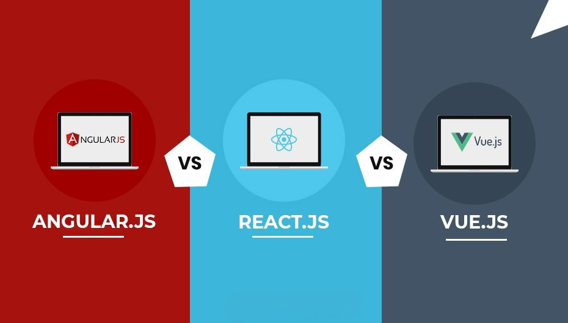

The Essential Trio: Learning React, Vue, and Angular for Front-End Developers
As the digital landscape continues to evolve, the role of a Front-End Developer has never been more dynamic and diverse.
Hi, I'm Emil, and I'm passionate about the journey to becoming a proficient Front-End Developer through mastering three essential
JavaScript frameworks: React, Vue, and Angular.
Unveiling the Power of JavaScript Frameworks
In the realm of modern web development, JavaScript frameworks have taken the spotlight. These frameworks provide a structured and
efficient way to build interactive and responsive user interfaces. React, Vue, and Angular stand out as the giants in this domain,
each offering unique features and benefits.
The Case for Learning All Three
While the choice between React, Vue, and Angular might seem overwhelming, there's a compelling argument for mastering all three.
Each framework has a distinct architecture and ecosystem, catering to various project requirements. By learning all three, you equip
yourself with a versatile toolkit, enabling you to approach different projects with the most suitable solution.
React: The Power of Component-Based UI
React's component-based architecture revolutionized Front-End Development. Its virtual DOM and reusable components offer
unparalleled performance and maintainability. Whether you're building a simple website or a complex web app, React's popularity
and extensive community support make it a must-learn framework.
Vue: Elegant Simplicity and Flexibility
Vue's simplicity and approachable learning curve have won the hearts of developers worldwide. Its incremental adoption strategy
and intuitive syntax make it an excellent choice for projects of all sizes. Vue's focus on easy integration and adaptability empowers
Front-End Developers to bring their creative visions to life.
Angular: Full-Featured and Scalable
Angular, developed by Google, is a comprehensive framework that excels in building robust and scalable applications. Its strong
architecture and built-in tools for testing, routing, and state management streamline the development process. While it may have a
steeper learning curve, the skills acquired from mastering Angular are highly rewarding.
My Aspiration to Learn
My journey as a Front-End Developer is marked by a burning desire to embrace the full potential of web development. Learning React,
Vue, and Angular isn't just about expanding my skillset; it's about embodying the art and science of crafting remarkable user experiences.
Each framework holds a key to unlocking new realms of creativity and innovation.
Embarking on the Journey
As I set forth on this educational journey, I'm excited to delve deep into React's component world, explore Vue's simplicity, and
conquer Angular's intricacies. The challenge is exhilarating, and the prospect of becoming a well-rounded Front-End Developer who can
tackle any project head-on is my ultimate motivation.